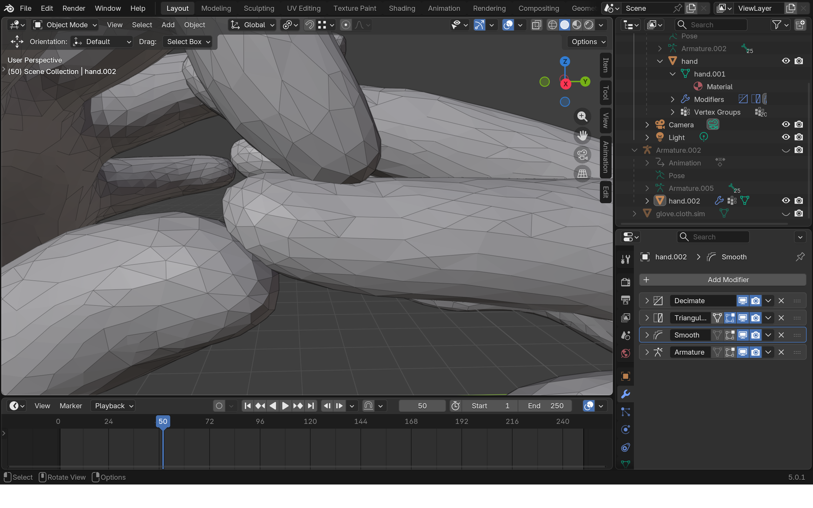
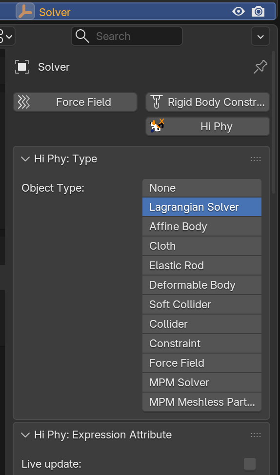
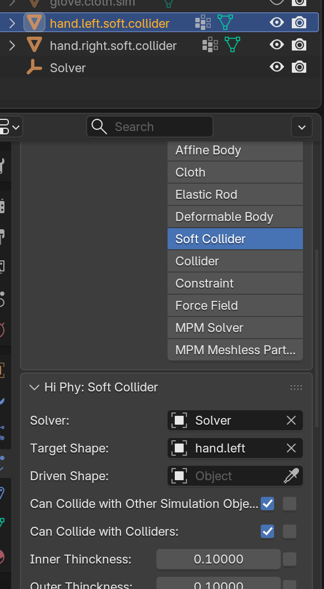
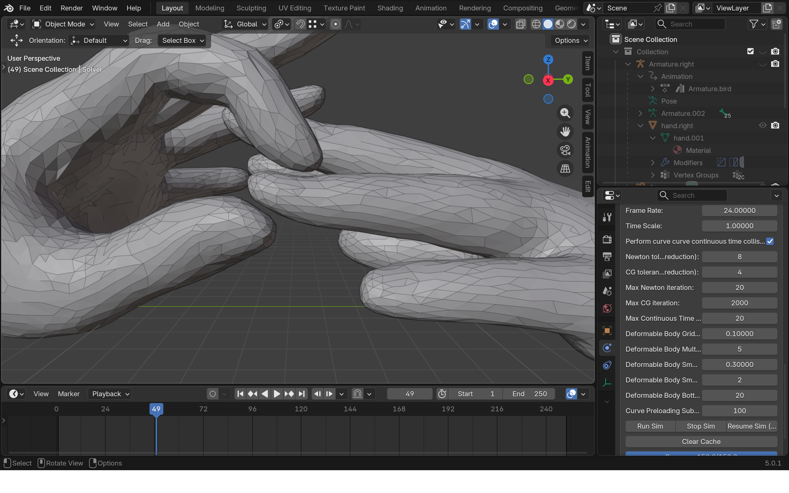
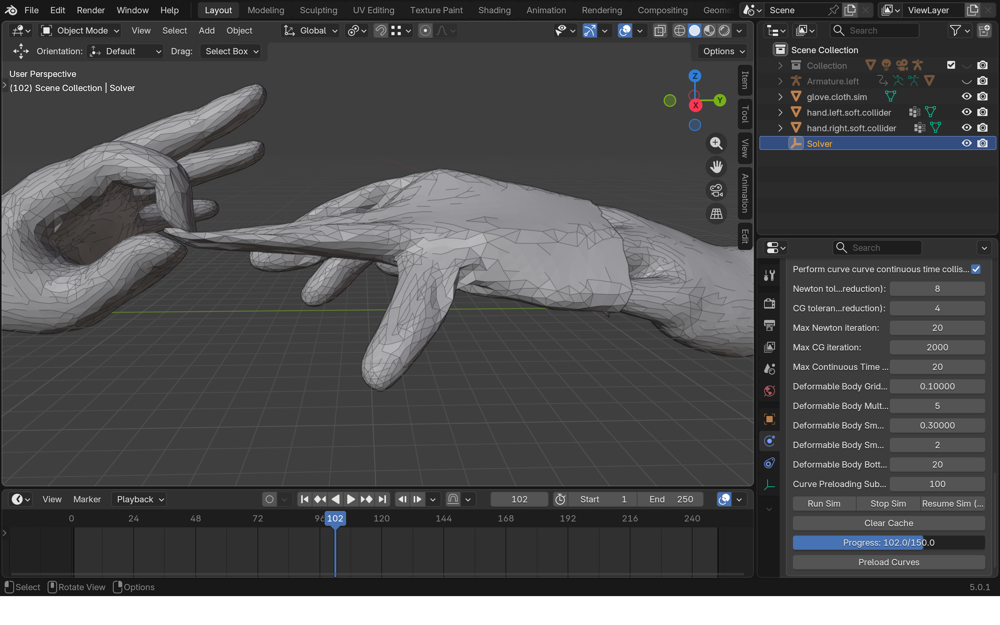

Glove#
In this example, we will demonstrate how to use the soft collider to automatically resolve intersections of the collision object, and create a clean intersection free cloth simulation.
The starting file can be find here. Starting file has a simple animation of hand grabs and pulls the glove at one finger.
{kind=link}

The starting animation has clear intersection between the two fingers.
Step 1: Creating Soft Colliders#
We will first create soft colliders for the hands and use it to resolve the intersections.
- The first step is to dupilicate the two hand meshes. Doing this by select each hand mesh, press Ctrl + A->Visual Geometry To Mesh->Check Keep Original.
Note
The reason to duplicate the mesh first is that HiPhyEngine deformation can not be applied at the top of the deformer/animation stack, so we need a seperate geometry from the animation to run the simulation.
-
For organization, pull the two new simulation meshes out of the hierarchy and rename them hand.right.soft.collider and hand.left.soft.collider.
-
To create a HiPhyEngine solver, add an empty plane axis object, rename it solver, goto the physics panel, turn on HiPhy, select Lagrangian Solver
- Change Solver Scale to 1 as the scene is in centimeters.
{kind=link}

- To create the soft colliders, select hand.right/left.soft.collider, goto the physics panel, turn on HiPhy, select Soft Collider. Choose the solver object for the Solver parameter and the corresponding animated hand mesh for the Target Shape parameter.
- Change Outer Thickness to 0.1 to make the contact radius to 0.1 cm.
- Change Barrier Stiffness to 100 to soften the collision.
Default Values
The default value for Blender is aimed for meters as unit, for this scene, we are in centimeter unit, therefore, we need to adjust the Thickness and Barrier Stiffness parameters.
CCD failure
CCD stands for Continuous Collision Detection, HiPhyEngine uses CCD to detect object going through each other. However barriers still need to be stiff enough to push objects away. If the object Thickness is too thin or the Barrier Stiffness is too soft, the barrier might not be enough strength to push apart the objects, and leads to solver failures. In contrast, if the barrier is too stiff or the thickness is too large, objects might be pushed apart too far. You will need to tune the barrier stiffness and thickness based on your needs in each scene.
{kind=link}

Note
You might have noticed now, we actually have two left hands in the scene instead of a left and a right. 
That's it! If you goto the solver object and Run Sim. It will go through the timeline export the frames and run the simulation!
Note
The simulation itself is very fast, however, because the slow animation rig, the export process can take a while.
You can see that now the intersection between the fingers are resolved!
{kind=link}

Step 2: Adding The Glove#
In the example file there is a premade glove.cloth.sim object as the glove mesh.
-
To create the cloth, select glove.cloth.sim, goto the physics panel, turn on HiPhy, select Cloth. Choose the solver object for the Solver parameter.
-
For the simulation parameters:
- Change Cloth Material to Elastic Membrane for rubber like material.
- Change Gravity to [0, 0, -980] for the scene size.
- Change Inner Friction to 0.1 to make it easier to slide off the left hand.
- Change Outer Friction to 1 to make it stay on the right hand.
- Change Outer Thickness to 0.1 to make the contact radius to 0.1 cm.
- Change Inner Thickness to 0.1 to make the contact radius to 0.1 cm.
- Change Barrier Stiffness to 100 to soften the collsion.
Gravity
Now to run the simulation, you can see the glove is very close to be pulled off, but still not enough.
- Change Outer Friction to 0.1 of the left hand.
- Change Outer Friction to 1 of the right hand.
Now to run the simulation again, the glove will be taken off now!
{kind=link}

The final file can be find here.
That's it! You can see the HiPhyEngine's robust collision make it very easy to automatically resolve intersection of animation meshes and create a clean and intersection free simulation result.
Simulation Time
The default Newton and CG tolerance is very conservative, and lead to modest simulation time. User can try to reduce the Newton and CG tolerance to 4 and 4 and to 2 and 2, and see how it impact simulation time and the result.